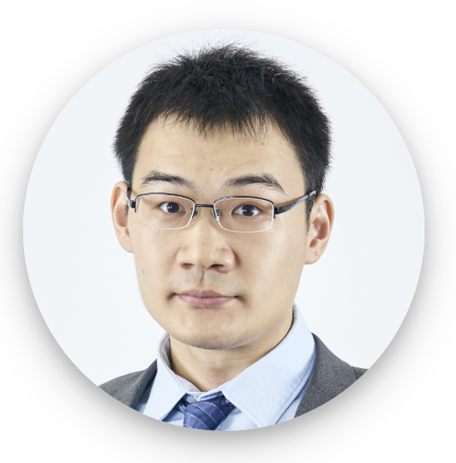
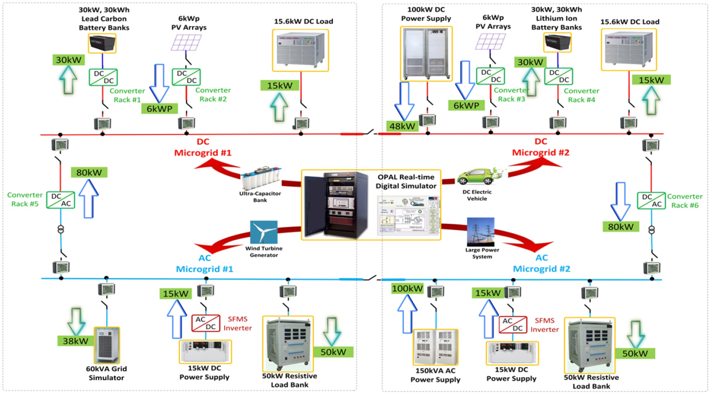
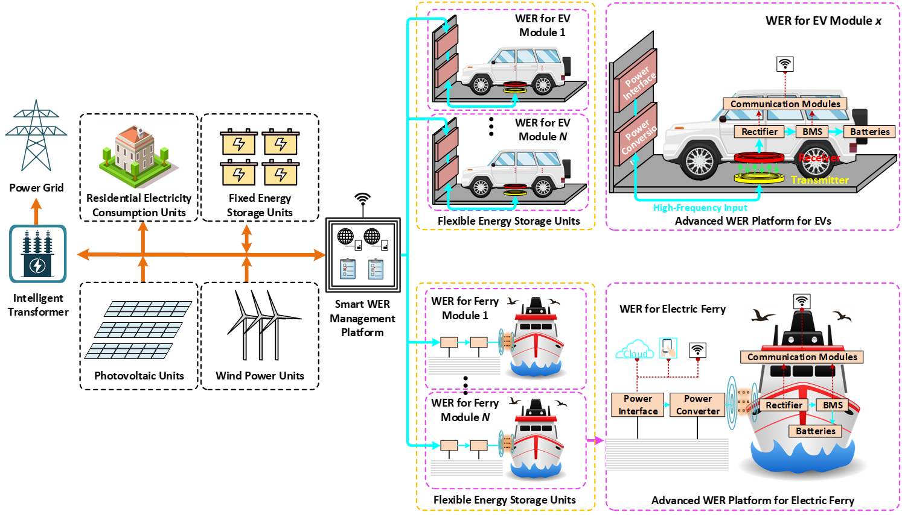
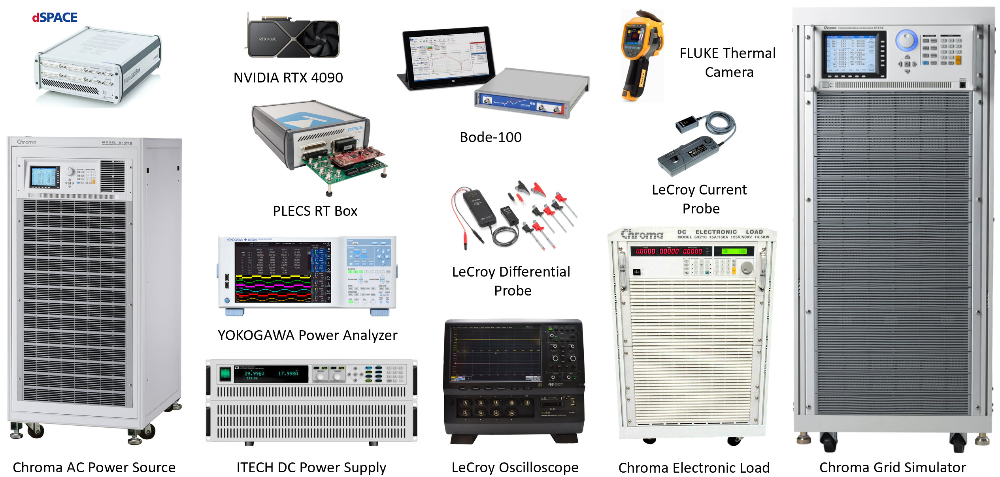

Related Links

Assoc Prof Yi Tang
Associate Chair (Graduate Studies)
Director of Laboratory for Electrification
& Advanced Power Conversion
EEE, NTU
Office:
S2 B2A 07
Email: yitang@ntu.edu.sg
Dr. Yi Tang received the B.Eng. degree in Electrical Engineering from Wuhan University, China, in 2007, and the M.Sc. and Ph.D. degrees in Power Engineering from the School of Electrical and Electronic Engineering, Nanyang Technological University, Singapore, in 2008 and 2011, respectively.
From 2011 to 2013, he worked as a Senior Application Engineer with Infineon Technologies Asia Pacific, Singapore, and subsequently as a Postdoctoral Research Fellow at Aalborg University, Denmark, from 2013 to 2015. Since March 2015, he has been with Nanyang Technological University, where he is a tenured Associate Professor and serves as Associate Chair, Graduate Research Studies, overseeing the graduate research programmes in the School of Electrical and Electronic Engineering. He is also the Cluster Director of the Advanced Power Electronics Research Program at the Energy Research Institute at Nanyang Technological University.
Dr. Tang's contributions have been recognized with the Infineon Top Inventor Award in 2012, the Early Career Teaching Excellence Award in 2017, and multiple IEEE Prize Paper Awards. He served as an Associate Editor for the IEEE Journal of Emerging and Selected Topics in Power Electronics from 2016 to 2025 and for the IEEE Transactions on Power Electronics from 2018 to 2025. He currently serves as Co-Editor-in-Chief of the IEEE Transactions on Power Electronics.
Research
Our research group conducts research in power electronics, with an emphasis on technologies that enable efficient electrification and advanced power conversion. Our work integrates fundamental analysis, high-performance hardware design, and application-driven innovation across modern power systems and electrified transportation. We focus on the following major research areas:
Power-Electronics-Dominated Power Systems

- Hybrid AC/DC grid
- Virtual inertia
- Wide frequency oscillations
- Grid-forming control
- ...
High-Efficiency High-Power-Density Converters

- DC-DC converter
- T-Type inverter
- GaN converter
- ...
Wireless Power Transfer

- Advanced control and modulation
- Precise dynamic modeling
- Coil and magnetic core design
- ...
Laboratory Equipment

Publications
The recent selected publications are listed below. For more publications, please visit
Google Scholar and
IEEE Xplore.
- Z. Xiao, T. Sun, Z. Yao and Y. Tang, "Optimizing Multiphase DC–DC Converters via Interleaving/Intraleaving and Phase Shedding," in IEEE Transactions on Power Electronics, doi: 10.1109/TPEL.2025.3631793.
- Y. Jiang et al., "Universal Resonant Parameter Design Method Based on Multiple Boundary Constraints for Wireless Fast Charging," in IEEE Transactions on Power Electronics, doi: 10.1109/TPEL.2025.3573737.
- Z. Xiao, Z. He, L. Zhang, Z. Yao and Y. Tang, "Resonant DC Transformer With Integer Multiple Frequency for High Step-Ratio Application," in IEEE Transactions on Transportation Electrification, doi: 10.1109/TTE.2025.3627551.
- Q. Yu, F. Deng, Y. Tang, X. Cai, Z. Chen and F. Blaabjerg, "Review of Health Monitoring Techniques for Capacitors in Modular Multilevel Converters," in IEEE Transactions on Power Electronics, doi: 10.1109/TPEL.2025.3571897.
- Z. Xiao, F. Deng, Z. Yao and Y. Tang, "Minimizing and Balancing Power Losses in Multiphase Paralleled Bridge Legs," in IEEE Transactions on Power Electronics, doi: 10.1109/TPEL.2025.3569667.
- Z. Yao et al., "Generalized Trapezoidal Current Mode-Based Zero-Voltage Switching for Multilevel DC–DC Converters," in IEEE Transactions on Power Electronics, doi: 10.1109/TPEL.2025.3551341.
People
Research Fellows
- Ziheng Xiao
- Songtao Huang
- Zhijian Zhang
PhD Students
- Yaohua Li
- Tengfei Sun
- Delin Zhao
- Jingrui Liu
- Yian Guo
- Julian Chung Zhong Wei
- Minzheng Liu
- Ngo Bac Bien
- Shukla Shriya
- Huizhong Wang
- Rifki Daris Dzulfikar
Alumni
Research Fellows
- Yongbin Jiang (2026), NSFC Excellent Young Scientists Fund (Overseas), Professor, Xi'an Jiaotong University
- Zhigang Yao (2025), Associate Professor, Chongqing University
- Fei Deng (2025), Professor, Northwestern Polytechnical University
- Lei Zhang (2025), Associate Researcher, Institute of Electrical Engineering, Chinese Academy of Sciences (IEE-CAS)
- Shuxin Chen (2023), Senior Engineer, Dyson
- Li Zhang (2022), NSFC Excellent Young Scientists Fund (Overseas), Professor, Huazhong University of Science and Technology
- Xin Li (2022), Associate Professor, Southeast University
- Yiming Zhang (2020), NSFC Excellent Young Scientists Fund (Overseas), Professor, Fuzhou University
- Jinyu Wang (2020), Professor, Xi'an Jiaotong University
- Shuli Wen (2020), Associate Professor, Shanghai Jiaotong University
- Tianbo Yang (2020), Senior Engineer, Dyson
- Jingyang Fang (2019), NSFC Excellent Young Scientists Fund (Overseas), Professor, Shandong University
- Chengquan Ju (2019), Data Scientist & Group Vice President, OCBC
- Rudy Tjandra (2019), Research Engineer, Rolls Royce
- Hongchang Li (2019), Associate Professor, Xi'an Jiaotong University
- Dehong Zhou (2018), Professor, University of Electronic Science and Technology of China
- Xiaoqiang Li (2018), Associate Professor, China University of Mining and Technology
- Nunnagopppula Krishna Swami Naidu (2017), Associate Professor, Indian Institute of Technology Varanasi
PhD Graduates
- Haoxin Yang (2025), Senior Engineer, VFlowTech
- Han Deng (2023), Senior Engineer, Huawei
- Zhe Zhang (2022), Integration Manager, Trinasolar
- Jiale Yu (2022), Senior Engineer, Singapore Power Group
- Ke Guo (2022), Senior Engineer, Jiaxin Semiconductor company
- Huan Qiu (2021), Senior Engineer, Huawei
- Shuxin Chen (2021), Senior Engineer, Dyson
- Yang Qi (2021), Associate Professor, Northwestern Polytechnical University
- Nanjun Lu (2020), Senior Manager, Alibaba Group
- Jingyang Fang (2018), Professor, Shandong University
- Shunfeng Yang (2017), Professor, Southwest Jiaotong University
Teaching
- EE4504: Design of Clean Energy Systems
- EE4532: Power Electronics and Drives
- EE6501: Power Electronic Converters
- EE6514: Special Topics in Clean Energy System Design
Photo Gallery
Prof. Xiongfei Wang - 2025 Team bonding dinner - 2025
Team bonding dinner - 2025
 Team bonding activity - 2025
Team bonding activity - 2025
 Team bonding activity - 2024
Team bonding activity - 2024
 Team bonding dinner - 2024
Team bonding dinner - 2024
 Prof. Sun Kai - 2024
Prof. Sun Kai - 2024
 Prof. Frede Blaabjerg - 2023
Prof. Frede Blaabjerg - 2023
 Prof. Leo Lorenz - 2023
Prof. Leo Lorenz - 2023
 Team bonding activity - 2022
Team bonding activity - 2022

Research Sponsors